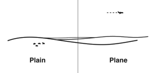

stumbling into aerodynamics
Aryn Harmon
Introduction
I have a curiosity for how exactly aircraft fly.
I want to know how different body types influence flight behavior,
how commercial aircraft are shaped differently than R/C planes.
Is it possible to create a hybrid between a quadcopter and a flying wing?
These questions have led me to the study of aerodynamics.
Eventually I will study the design of flight vehicles as well,
but I need to establish a working knowledge of fluid physics
before I can apply it. I'll be following along
with MIT's introductory aerodynamics class.
Posts
I will post my progress along this journey every Friday.In these posts, I'll be explaining what I'm learning
and how I anticipate using this information
as well as my thoughts on the matters in general.
achcello@gmail.com
